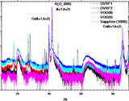
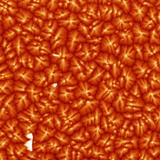

Past Research
-
Fabrication of Vanadium Oxide (UCSD, 2006-2008)

As a graduate researcher at UCSD, I worked primarily on the fabrication and characterization of thin film vanadium sesquioxide (V2O3). My role was experiment design and execution, with the direction of a post-doc. The work was largely an iterative process of moving around in the high vacuum electron plasma sputtering fabrication parameter space of (total pressure, relative pressures of nitrogen and oxygen, anode voltage, anode current, and current mode - AC or DC), and then using various characterization techniques (including x-ray diffraction and x-ray spectroscopy) to evaluate.
-
Nanocharacterization of Pentacene (Cornell, 2005-2006)

-
Grain Size Estimation
Two different imaging methods were used to give estimates of thin-film pentacene grain sizes. It is believed that AFM is the more accurate of the two.
-
Overall Imaging Method Comparison
It was shown that AFM is best for imaging topographic information of pentacene thin films, while STEM is best for imaging crystallographic features (such as twinning and crystal orientation).